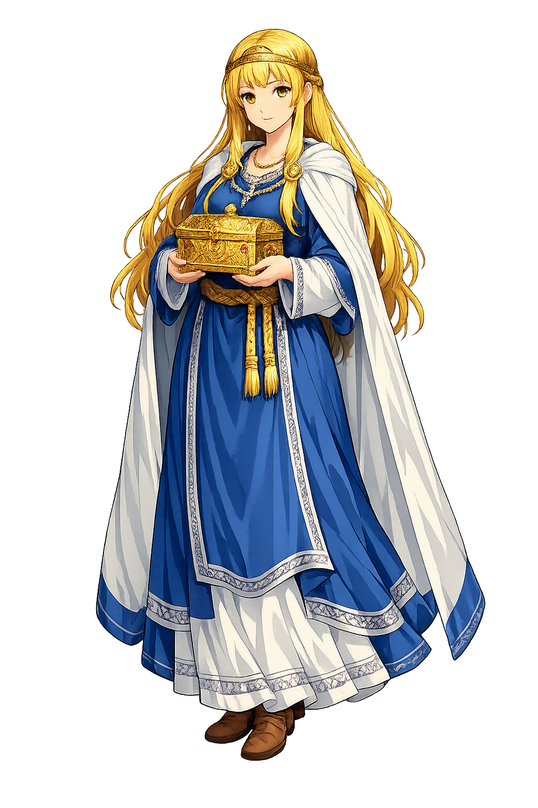

Unicode restoration and ASCII comparison
ᚠᚢᛚᛚᛅ
The name in its original Norse form. Fulla (ᚠᚢᛚᛚᛅ) is attested in the source tradition — “Bountiful”. Its original diacritics and script distinctions carry the full phonetic and orthographic weight of the source tradition.
fulla
The plain fulla form is identical to the Unicode restoration. Because this name is already written in Latin letters, no diacritics, stress, or script information were lost — only capitalization differs.
Fulla
The Unicode restoration does not need to recover lost marks for Fulla. Its value is canonical spelling and consistent cataloguing, not the reconstruction of erased orthography. The domain is readable as-is to both DNS and humanity.
Fulla.com → fulla.com
The non-ASCII characters in Fulla are encoded while the ASCII remains visible. To the DNS, it is Punycode. To humanity, it is Fulla.
How Fulla travels from ancient script to the modern URL
Owned, ideal, and ASCII forms of Fulla
Fulla
Restores ᚠᚢᛚᛚᛅ. The full Unicode restoration. fulla.com is not in the PuniCodex collection — it is watched for release; if it drops, this temple upgrades to an owned flagship.
How Fulla was spoken
Abundance, Secrets — the Trusted One of Frigg's Hall
Fulla is Frigg's handmaid and confidante — the virgin goddess who goes with her hair loose and a golden band about her head, who carries the queen's little box, looks after her shoes, and shares her secret counsels. Her name is Fullness itself: plenty made a person, trusted with everything a queen cannot carry alone.
Frigg's little casket, which Fulla carries — the portable treasury of the queen of the gods, and the clearest badge of her office.
The gold snood Fulla wears about her loose hair — Snorri's one detail of dress, and the mark of wealth her name promises.
Fulla looks after Frigg's footwear — the humblest duty in the catalogue, and the surest sign of a servant admitted to every chamber.
She shares Frigg's leyniráðagørðir — the queen's secret deliberations: the duty that outranks every object she carries.
Stories of Fulla
Fulla has no saga of her own: her dossier is four precise notices, and every one of them places her at Frigg's side. What the tradition lost in narrative it kept in definition — no goddess in the Edda is more exactly described in a single sentence.
Snorri's catalogue of the ásynjur gives Fulla her entire portrait in one sentence, and the tradition never varies it: 'Fulla is a virgin and goes with her hair loose and a golden band about her head; she carries Frigg's eski, looks after her footwear, and shares her secret counsels with her.' The three duties descend in rank and rise in intimacy — the box is treasure, the shoes are service, the counsels are trust itself. She is named immediately after Gná, Frigg's errand-rider, and the pairing has stuck: where Gná carries the queen's words out through the worlds, Fulla keeps the queen's words that never leave the hall. Scholars since Grimm have read both as hypostases of Frigg — aspects of the queen walking about as attendants — but the Edda keeps them as persons, and Fulla's golden band and loose hair make her the most visually fixed of all the minor ásynjur.
Fulla's one errand in the Poetic Edda is given in prose, at the head of Grímnismál. Óðinn and Frigg had quarrelled over their foster-sons: Frigg accused King Geirröðr, Óðinn's favourite, of being so stingy he tortured his guests for lack of food, and Óðinn laid a wager on his man and set off disguised to test him. Frigg, knowing the road, sent her handmaid Fulla to Geirröðr ahead of him, to warn the king to beware of a certain sorcerer coming to his land to bewitch him — and gave her the token by which he could be known: no dog, however fierce, would leap at him. The warning is the trap: Geirröðr seized the blue-cloaked stranger, named Grímnir, and tortured him between two fires — and out of that fire the god spoke the whole catalogue of the worlds. Fulla appears only to deliver the message and vanish, but the wager, the torture, and the poem's entire revelation turn on her errand.
When Hermóðr rode nine nights to ransom Baldr and came home with the tidings, he brought tokens from the dead: Baldr sent back the ring Draupnir to Óðinn, and Nanna — Baldr's wife, who had died of grief on his pyre — sent gifts out of Hel to the two women of Frigg's hall: a linen headdress for Frigg, and a finger-ring for Fulla. It is the smallest bequest in the whole Baldr cycle, and the most telling: when a dead goddess thinks of Ásgarðr's household, she thinks of the queen and of the queen's handmaid by name. Fulla stands in that sentence exactly where her office puts her — the second woman of the hall, remembered with jewellery from beyond the world.
The one continental witness comes from a tenth-century Fulda manuscript, the Second Merseburg Charm — the only pagan theogonic text in Old High German. Phol and Wodan rode to the wood, and Balder's foal wrenched its foot; then the goddesses chant over it in sequence: Sinthgunt, Sunna her sister; Friia, Volla her sister; and at last Wodan, who knows how, and the limb is knit bone to bone and blood to blood. Since Jacob Grimm, Volla — Friia's sister — has widely been read as Fulla, Frigg's attendant: the name is the exact Old High German form of the same word, and the charm puts her, precisely as the Edda does, at Friia's right hand. The identification is argued, not proven, and the handbooks counsel the usual caution — but if it holds, Fulla is one of the very few Norse goddesses with a continental footprint older than the Icelandic books.
Fulla is the goddess of what is held in trust. Every detail of her portrait is a form of custody: the casket she carries but does not own, the shoes she tends but does not wear, the counsels she shares but does not speak. Even her name works this way — Fullness is not a thing she does but a thing she keeps. The tradition gives her no adventure because her office is the adventure's opposite: Gná rides out with the queen's words; Fulla stays, and what is entrusted to her stays with her. Nanna's ring from Hel is the tradition's own verdict on that office — when the dead send gifts home, they send one to the keeper. In a mythology that ends in fire and betrayal, Fulla is the quiet counterweight: the proof that some things, once entrusted, are simply kept.
Enter Extended Lore